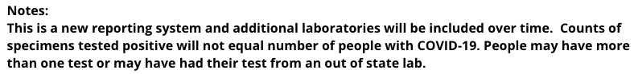

Michigan negatives posted for 3/25/2020
https://www.michigan.gov/coronavirus/0,9753,7-406-98163-520743--,00.html Cumulative Number of Specimens Tested for COVID-19 - Last Updated 3/25/2020
Lab Type | Negative Tests | Positive Tests | Total Specimens Tested Commercial | 713 | 30 | 744 Hospital | 3296 | 1866 | 5261 Public Health | 2541 | 557 | 3104 Grand Total | 6550 | 2453 | 9109
We are actively debating this issue. MI is actually reporting specimens which does not equal people tested: 
We have reached out to the state for more clarification, but it is hard for us to translate into a “People tested” which us what we strive to report
Michigan is not being updated according to the covid19tracking web page because it is reporting specimens rather than people tested. I urge you to report the specimen counts (with caveats) for the following reasons:
- Other states are very likely double-counting people who have been tested multiple times.
- Michigan’s confirmed case count is close to the reported positive count, suggesting they are not systematically taking multiple specimens (e.g. nose and mouth) per person.
- Ramp up in total test capacity is important to track in its own right.
Another reason: Your data is the primary source of US test counts in the worldwide tracker at:
https://finddx.shinyapps.io/FIND_Cov_19_Tracker/
They are tracking tests performed as opposed to people tested.
See #60 . This has been noted in the MI notes.
Came here to share the same issue–Michigan now shows the number of negative tests. Please pull these and stop rolling forward the number from 3/20.